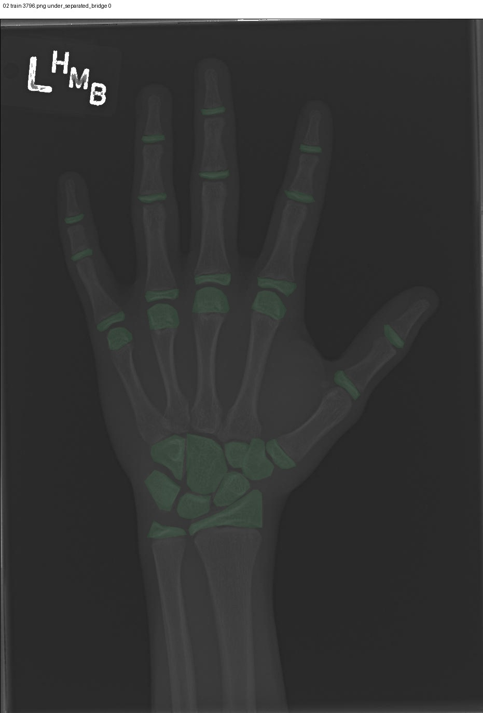

#1
3796.png
train P0 under_separated_bridge连通域26.0前景占比0.04385643802009829最近间距0.028950868174433708前景背景对比0.05034516751766205难例分数0.3577586274990768
check whether adjacent epiphysis/carpal regions should be separated; confirm bridge pixels and instance boundaries
决策
空白，暂不决定备注